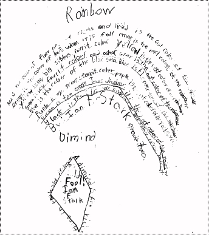
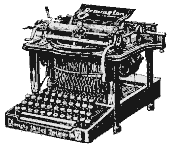
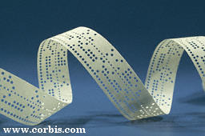

.:*~*:._.:*~*:._.:*~*:._.:*~*:._.:*~*:._.:*~*:._.:*~*:._.:*~*:._.:*~*:.
.:*~*:._.:*~*:._.:*~*:._.:*~*:._.:*~*:._.:*~*:._.:*~*:._.:*~*:._.:*~*:.
| PICTURES AS
"TEXT"
ASCII art and other "keyboard" art uses basic text characters to create a picture. Long ago, the written word did not consist of "text". Ironically, the first written documents consisted of pictures which represented ideas and objects-- not letters or text characters. Note the hieroglyphics on a tomb in the Valley of the Kings in Luxor, Egypt. |
|
||
|
|
TEXT AS PICTURES - HAND DRAWN
Over time, the written word developed into symbols which looked more like present-day text. The very first text art pictures were drawn by hand. Creative people used ornamental penmanship to create wondrously beautiful documents and pictures. The monastic monks created breath-taking manuscripts which incorporated letters of text into their art. However, there were few other pieces of art that were made from text characters. Illuminated Manuscript, Canterbury Cathedral
Canterbury, England, UK ca. 1971-1996
|
||
| Individuals
continued creating text art images by hand. During the Korean
War (circa 1950), a very talented Korean named 'Gwang Hyuk Lee' made a
hand drawn text picture depicting Jesus. He used the entire text
in the Bible's "Book of John" to create this multi-colored image.
Rumor has it that he was killed by the North Korean communists for creating
this 16" x 20" picture. This work of art is beautiful and created
entirely by hand! It must've taken an incredibly long time to complete.
Gwank Hyuk Lee's hand drawn "Book of John" - color image Shaped texts became
popular as part of the concrete and visual poetry movement.
According to the
Ruth and Marvin Sackner Archive of Concrete and Visual Poetry:
http://www.library.miami.edu/treasure/chapters/chaptr17.html "The calligrams of Apollinaire represent an important and original landmark in the history of visual and shaped poetry. These calligraphic poems may be considered as one of the precursors of modern concrete poetry."I will post an example of Apollinaire's calligram soon (when I find one). In the meantime, enjoy two hand-written visual poems created by my 8 year old son. They are entitled "Rainbow" and "Dimind" (Diamond).  .:*~*:._.:*~*:._.:*~*:. |
|||
| TEXT
AS PICTURES - TYPOGRAPHY
People were relieved from writer's cramp once mechanical methods to create text were created. The Chinese are generally recognized as the first group of people to develop the stamp/ink printing process (2nd Century AD) and the movable-type printing process (11th Century AD). It wasn't until the year 1450 that Johannes Gutenberg (along with businessman, Johann Fust and calligrapher, Peter Schoeffer) invented the printing press in Germany. It was based on a wine-press design and could print about 300 pages a day. As a result, books were produced more quickly and for lower cost. The art of typography could begin! A nice example of
typography is from the 1865 book, Alice in Wonderland, by Lewis
Carroll (Charles Lutwidge Dodgson).
The following tail of a mouse is from Chapter III, "A Caucus Race
and a Long Tale":
Alice in Wonderland was published a few years before the typewriter was invented. Therefore, it can be considered as one of the first printed text art creations. Concrete poetry and
typography continues today as evidenced by this modern 1997 example created
by 'Donovan' (Xdonovan@misslink.net ICQ#: 812836):
.:*~*:._.:*~*:._.:*~*:. |
|||
| TEXT
AS PICTURES -- TYPEWRITER
To many people, Christopher Latham Sholes is considered to be the inventor of the modern typewriter. His first machine was completed in September of 1867. E. Remington & Sons manufactured the typewriter in 1874. The keyboard has changed many times but the basic characters remains. There is an extensive history to the evolution of the typewriter. Visit a very informative web site which identifies the history of the typewriter: http://home.earthlink.net/~dcrehr/.
|
|||
|
Since 1867, people have used the typewriter not only for printing manuscripts but creating works of art. In the 1890s, typewriter manufacturers and secretarial agencies organized public speed typing competitions. They also organized competitions for typewriter drawings. The earliest preserved example of typewriter art was made in 1898 by a woman named Flora Stacey. Not much is known about Flora Stacey except that she was probably a secretary. Her framed picture of a butterfly was published in the October 15th, 1898, edition of Pitman's Phonetic Journal. The entire rendering of this picture was
created with the typewriter -- yes, even the butterfly! The butterfly
is composed of brackets, hyphens, points, oblique strokes, a single
asterisk, and several "o"s.
|
|
||
The journal commented:
"We think it will be generally admitted that the illustration is in the highest degree creditable to the artistic ability, skill and patience of the lady, and to the unique capabilities of the Bar-lock for this class of work. It may be noted that in competitions for typewriter drawings Miss Stacey has been extremely successful.... An outsider, or one unaccustomed to the use of the typewriter, can scarcely realise what an expenditure of time and patience is necessary in order to successfully execute one of these curious drawings. The paper has, of course, to be turned and re-turned, and twisted in a thousand different directions, and each character and letter must strike precisely in the right spot. Often, just as some particular sketch is on the point of completion, a trifling miscalculation, or the accidental depression of the wrong key, will totally ruin it, and the whole thing has to be done over again." |
|||
| This brief synopsis describes
some of the negative and positive aspects of typewriter art. First
of all, once a mistake is made, it generally can not be corrected.
There are no delete or overwrite keys on a typewriter. Secondly,
the positioning of paper can be crucial. One slip and the typewritten
picture may be ruined.
There are a number of techniques available to the typewriter artist that are not available to the ASCII keyboard artist. A typewriter artist can manipulate the sheet of paper in various directions and angles. The characters can be spaced in any way -- often overstriking another character or "half-spacing" to achieve a special effect. Typewriter art offers more flexibility and variation than the computer ASCII art. However, ASCII art is much more forgiving. Typewriter art was a popular art medium in the 1950s to the 1970s. There are many wonderful examples of typewriter art found in Alan Riddell's book, Typewriter Art (London, 1975). Some of the images are colorized by using tinted ink ribbon. Several of the images are abstract. A few of the images are portraits (Queen Elizabeth, the Duke of Edinburgh, Gandhi, Winston Churchill, and Henri Chopin). All of the pictures are superb. There is a listing of over 60 typewriter artists who have contributed to this 100+ image collection, one of whom is Vaclav Havel, President of the Czech Republic. I found the Henri Chopin portrait most clever as the image was created using only the letters of his name "henri chopin". The background of this 1974 image repeatedly spells out "audiopoems". The text artist is Robert Morgan. He created the image as a design for the sleeve of Henri Chopin's record entitled "Audiopoems" -- Tangent Records. (anyone else remember records and record sleeves?) ( View the picture -- notice the overstriking technique that results in shading of the image -- Robert Morgan's "Henri Chopin" ) Another fine example of typewriter art was posted on USENET a few years back. A reader found an article in an unnamed magazine (1960) about a man named Guillermo Mendana Olivera. The article states that Mr. Olivera was a stenographer by day in Leon, Spain, and a keyboard artist by night. He used small o's and x's and periods, dashes, and commas to create his typewriter art masterpieces. And each picture took about 70 hours to complete! Incredible! (The .gif of the magazine article is posted on the internet at: http://mypage.direct.ca/r/rcrawfor/ascii_bg.gif but I flagrantly copied it. With web sites coming and going, I wanted to make sure that I had this wonderful part of text art history. Good thing too, if you go to that URL, you'll find a big 404 error.) |
|||
|
There are very few books about ASCII art. Most computer art text books deal with modern graphics and programming. Eventually I'd love to put together a publication of my ASCII art creations, information on the history of text art, and the "how-to create" guidelines for ASCII art. (Are there any publishers out there interested in such a project?) In the meantime, you're stuck reading my cyberspace meanderings. At right, you'll find a listing of typewriter art books that I've been able to identify. |
(1978, Price Sloan Publishers) ISBN 0843104333 (1975, London Magazine Editions) ISBN 0-900626-99-2 (Thank you Andrew Belsey for finding this book and forwarding it to me!) (1962, Fearon Pittman/MacMillan Publishers) ISBN 0028306104 by Bob Neill (1984, The Weavers Press) |
||
The book, "Art
Typing", written by Nathan Krevolin, describes creating
images-- mostly text and borders-- with typewriter characters. Many of
the pictures are made entirely out of "X"s... For example:
There is a section on how to make type-written reports, price lists, and menus, as well as how to make a card. (Perhaps a precursor to 'Print Shop'?) Some mention is made of half-spaces and tilting type paper to get a unique look-- neither of which apply to ASCII art. One page identifies 'cartooning' with keyboard characters-- this is the page which reminded me most of today's ASCII art... Here are two of the ten items pictured...
http://www.dataweb.net/~mic/typewriterart/cat.htm Typewriter Art by Bob Neill - Persian Cat .:*~*:._.:*~*:._.:*~*:. |
||||||
| TEXT
AS PICTURES -- TELETYPE (RTTY)
Similar text images were broadcast via Radio Teletype (RTTY). RTTY is a machine-to-machine method of communication which takes place over radio or telephone lines. Its purpose is not for text art transmissions, but for text communication between operators. The teletypewriter (or teleprinter) was invented in the early 1900s. The largest manufacturer of the teleprinter in the United States was the Teletype Corporation. The term "teletype" is used to refer to the teleprinter. However the word "teletype" is actually a trademark of the AT&T Teletype Corporation (much like how the word "xerox" took over the copying machine industry). The radio teleprinter became popular with the public after World War II when surplus teletype machines became available at a reasonable cost. These large machines provided a keyboard for input and a paper roll for printed output. Video monitors didn't become feasible until the mid-1970s. Even today, there are many active RTTY operators and clubs. RTTY operators (ham operators) have used various codes to transmit messages. These codes include BCD, EBCDIC, Morgan code, and Baudot code. However RTTY transmissions typically used the five-bit, 32 character Baudot code. Initially, RTTY did not use seven-bit ASCII (American Standard Code for Information Interchange). ASCII was not standardized until 1968. There are differences between Baudot and ASCII. Differences include bit-size and number of characters allowed. The Baudot code uses numbers, upper case letters, and some punctuation characters. It does not allow for lower case letters. The ASCII code uses upper and lower case letters, numbers, and more of the "standard" punctuation characters. There are, of course, other differences between the two codes. For a more technical explanation, visit George W. Henry Jr.'s web site. George Henry (K9GWT) has put together a paper which describes the differences between the two codes. It provides some definitions for RTTY terms and examines the various interfacing standards used with ASCII and Baudot terminals: http://fido.wps.com/ITA/index.html Even though most radio amateurs In the United States use the Baudot code, they have been authorized by the FCC to use ASCII as well as the older Baudot code for RTTY communications. This took effect in March of 1980. Several RTTY enthusiasts have started to translate Baudot code to ASCII. If you have some paper tapes of Baudot/ RTTY art which need to be converted, you can find a program to transform them at: http://fido.wps.com/Baudot/index.html The text art images sent in the ham radio community consist of capital letters and are sent on long paper tapes. RTTY is slow. Transmissions are sent at 45 baud -- 50 baud is standard in New Zealand. Compare that to the 53,000 baud modem connections that we're using with our computers today! A large RTTY art image could take an hour to transmit. The speed of the RTTY transmission is approximately 60 -100 words per minute. To get an idea of what it would look like, view one of the JAVA applets that simulates an RTTY transmission at http://www.megalink.net/~n1rct/sta/onair.html. (URL no longer valid 8/00)I I would imagine that watching an RTTY art image materialize line-by-line would be quite mesmerizing. History of RTTY and Major Contributors - When and where and how it started, and how it advanced and changed over the years. Stories and short biographies of those individuals whose efforts advanced the hobby and made it better for others.
A copy of an early
text art transmission (perhaps RTTY?) was submitted by
"In 1969, as a young Marine, I was stationed in a CommCenter on Okinawa (3rdFSR) and we composed and sent this out to a slug of military installations. I decided to reproduce it and put it up hoping maybe someone remembers it or even better, is listed on it. If so, I'd sure like to hear from ya."Here is another early computer art image. To be honest, I don't know if it is RTTY or not -- supposedly it is. To me, it llooks as though it might be too wide for teletype paper. But what do I know? This image was found at Jim's Computer Garage Museum (http://www.rdrop.com/~jimw/jcgm-vcfii.html (URL no longer active 8/00) and is copyrighted© to James Willing: Mona Lisa image (Thanks Jim for letting me use it!) .:*~*:._.:*~*:._.:*~*:. Punch cards and punched paper tape were ways that information could be stored and rebroadcast. Teleprinter messages could be received on tape and then be resent to other teleprinters by using a taper reader. I haven't seen artwork created from punched paper tape, but I do remember seeing pictures made with punched cards. The holes were punched in strategic locations so that when held to the light, the cards displayed an image. The card I recall seeing was that of a Christmas tree. Alas, it wasn't mine and it has long since disappeared. I welcome e-mail from people who remember this art and might have an example of punch card art in their attic or basement! "Do not fold, spindle, or mutilate" .:*~*:._.:*~*:._.:*~*:. There are many sites on the Internet that thoroughly describe what ASCII is all about. I will not go into great technical detail. However I will list a few web pages that have additional and detailed information about ASCII. To begin, ASCII is an acronym for the American Standard Code for Information Interchange. ASCII was created in the early 1960s but did not become a United States government standard until 1968. In the 1960s, there were many data communication codes that were competing for the US Standard. In 1962, IBM created and promoted a coding standard known as Extended Binary-Coded-Decimal Interchange Code (EBCDIC). This was an 8-bit code which allowed up to 256 characters. However it lost out to ASCII as a "PC standard". EBCDIC is still used on many mainframe systems even today. ASCII was defined by the American National Standards Institute (ANSI) in 1968 as "ANSI Standard x3.4". It has also been described as ISO 636. It is a 7-bit code that has a maximum of 128 characters/controls. ANSI is the Institute that defines American National standards. ASCII code is one of these standards. So, technically speaking, ASCII is an ANSI code. Got that? There is another ANSI standard, ANSI Standard x3.16, which is an 8-bit code. This expansion was defined in 1979 in an effort to standardize graphic character representations and cursor control. It is based upon a 256 character set. It includes the 128 characters/controls of ASCII and an extra 128 characters/controls. It is sometimes called "extended ASCII" or "high ASCII", but it is really neither. It is a different ANSI Standard -- but not the "American Standard Code". Have I totally confused
you?
To view the ASCII Code Charts ( 7-Bit ASCII codes with Even parity, 7-Bit ASCII codes with Odd parity, 7-Bit ASCII codes with Space parity, 7-Bit ASCII codes with Mark parity, ASCII Control code details): ( http://telecom.tbi.net/ascii1.html ) To view the "Extended
Character" set.
.:*~*:._.:*~*:._.:*~*:. Perhaps the real start of ASCII art is with the beginning of the Internet. The Internet began in the 1960's as a means to communicate if nuclear war broke out. Military authorities created a network called ARPANET which connected 37 computers and several defense departments. No war came (thankfully) and the computer system expanded to include universities and other educational institutions. For many years the Internet belonged to the military and to the schools. In the early 1990's, the World Wide Web was developed in the Switzerland. It was there that Hyper-Text Mark-Up Language (HTML) was first used. HTML is what allows documents to have 'hyperlinks'-- those links which cause a surfer to jump from web page to web page. Many people use the Internet for e-mail. Initially, the Internet was pure text - no graphics and certainly no animations. E-mail was the same. ASCII art was used to create diagrams and charts. It was also used for "fun" and to enhance and liven up the plain text messages. Besides digrams and charts, probably the earliest ASCII art from the Internet are the "Spy at the Wall" collection and the "Silly Cows" collection. David Bader, an ASCII art enthusiast and editor of the 'Cows", recently sent me the COMPLETE, UNCUT, ORIGINAL, and OFFICIAL Silly Cow collection! These cows can be seen all over the Internet and are truly considered to be "classic" ASCII art.. BULLETIN BOARD
SYSTEMS & UNDERGROUND ART
BBSs were developed
in 1978 and became quite popular in the early 1980s.. MUDs (multi-user
dungeons) and MUGs (multi-user games) also became quite popular in the
early years of the Internet. These are all text based applications.
So, if someone wanted to include a picture or diagram, it had to be created
from text. Even today, BBSs, MUDs, and MUGs exist -- many are still
text based.
There is another group of people who have used/created ASCII art from the early days. These are the "underground art groups" who create and package zipped files of art which can be downloaded from the. Some of these groups have been around for many years and create ANSI, ASCII, "Extended ASCII" text pictures, and VGA animations. Here are some relevant sites: Other art groups involved in the underground art scene include iCE and CHAOS. .:*~*:._.:*~*:._.:*~*:. ANSI ART:
AOL MACRO ART: America Online (AOL) is one of the few Internet/e-mail programs that did not allow for a fixed-width font. Up until the release of version 4.0, all AOL users had one font. -- yes, ONE font. That one font was Arial-10. Arial is a proportional font. The ASCII art of the Internet looked totally skewed to AOL users. In response, AOL users modified the spacing (by hand) so that the ASCII art would look good in their Arial proportional font. There are many AOL text artists who specialize in creating the Arial font pictures. Because their audience is solely other AOL users, "extended" characters are often used and seen without problems. These AOL Arial-font text pictures have been called "macros". Some misinformed people call them "ASCII Art" - they are not. Obviously, the AOL macros and ASCII art are 'cousins'. They are not the same. Many of the AOL macros are quite good. Unfortunately, they are not often seen or used by people outside of AOL (due to the font/spacing/character issues). An example of a proportional -font AOL text art "Macros" by Jadie.
mIRC POP-UPS: Another place that the ASCII art is prevalent is on mIRC (Internet Relay Chat). There are a number of chat channels that scroll colorized "ASCII" pop-ups or pictures. Often the pop-ups include the "extended" characters. This is rarely a problem since users are tied into the same mIRC software. There are many, perhaps thousands, of mIRC channels. Popular ones to "play" the colorized pop-ups include #mirc_rainbow and #mirc_colors. There are several IRC networks, the largest being Undernet. Other networks include Efnet, Dalnet.. And some related links:
.:*~*:._.:*~*:._.:*~*:. The Internet continues to grow. As more personal and home computers are purchased, more people are joining in. The 1999 Internet statistics have been released. There are about 800 million pages on the World Wide Web. Compare this to the 320 million pages estimate of 1997. Electronic mail (e-mail) is widespread. Almost everyone has an e-mail address. People have discovered that e-mail is an efficient method of communication with friends and relatives. There are a variety of e-mail software and programs available. Some e-mail programs allow for graphic images -- but not all. Even people who are capable of receiving images are hesitant to download unknown files and images. ASCII art is text. It does not have to be downloaded to be viewed. For this reason, many people opt to send ASCII art. Microsoft declared ASCII art "dead" in June of 1998. Why? I'm not sure. But I would guess that Microsoft is encouraging people to use GIF and JPG graphics -- of course, with their software. I also think that it is due to the fact that some software, namely Microsofts, are now using a default proportional font setting. ASCII art will appear skewed when viewed in a proportional font. All computer systems have capabilities for fixed-width font, so ASCII art isn't completely dead. People only need to switch their font to a fixed-width one such as Courier, FixedSys, Monaco, or Lucinda Console. ASCII art is not
dead. At least not yet. People continue to be intrigued and
amazed by what can be created using basic keyboard characters. ASCII
art is still used in e-mail, in e-zines, on BBSs, in MUDs/MUGs, and on
mIRC. ASCII art has been used in web page development. The
non-graphical graphics have served a purpose. ASCII art has
also found its way off the Internet -- albeit slowly. It has been
used to illustrate books (look for Jon Barnbrook's British Art History
publication -1999). It has been used to illustrate in a magazine
(see 1999 June issue of UK's EXE Magazine). A reproduction
of an ASCII rendering was recently shown in 1999's contemporary art fair
in Malaga, Spain. (www.mac21.com)
Heck, you can even get a chocolate bar with an ASCII'fied wrapper!
(www.gardenofinspirations.com)
-- don't be surprised to see that I maake ASCII art T-shirts available in
the future!
And it seems that someone has already gotten into the money-making aspect of ASCII art. For only $50 or £31.41, you can have an image turned into ASCII -- well actually, into the numbers that make up the value of Pi. The Pi image is constructed from the digits 0 to 9 (and one decimal point). Each digit has a different degree of darkness (grey scale). The final image is a black and white bitmap with the following size: 150 x 75 pixels. I wonder if people have actually paid money for this... it seems like a simple conversion program. Anyhow, take a look: Did I tell you? ASCII art has also found its way into advertising. Look at these recent advertisements using ASCII art... (the Honda image doesn't cycle, click on it and reload your page to view the animation) .:*~*:._.:*~*:._.:*~*:. |
||||||
| I will continue
to look for information about text art and other mediums leading up to
ASCII art, as we now know it... In the meanwhile, I'd like to hear from
you...
I have collected
responses from various e-mail and USENET posts regarding the history of
ASCII art. I have found it all to be interesting. If anyone has more
to add or comments to make, please add to the below "guest book"!
Add
To This ASCII Art History
.:*~*:._.:*~*:._.:*~*:.
.:*~*:._.:*~*:._.:*~*:. THIS PAGE MAY NOT BE USED OR PUBLISHED IN ANY FORM (WRITTEN, CD-ROM, ETC.) WITHOUT EXPRESS WRITTEN (HARDCOPY) PERMISSION FROM JOAN G. STARK. -- images remain copyright to the individuals who created them.-- .:*~*:._.:*~*:._.:*~*:._.:*~*:._.:*~*:._.:*~*:._.:*~*:._.:*~*:._.:*~*:. |
||||||
.:*~*:._.:*~*:._.:*~*:._.:*~*:._.:*~*:._.:*~*:._.:*~*:._.:*~*:._.:*~*:.
.:*~*:._.:*~*:._.:*~*:._.:*~*:._.:*~*:._.:*~*:._.:*~*:._.:*~*:._.:*~*:.
Thanks to... Panati, Charles; Browser's Book of Beginnings, 1984, Houghton Mifflin Company
John Foust -- X-jfoust@threedee.com
George Hutchison -- W7KSJ@RTTY.com
Marc Leavey, MD - WA3AJR -- X-ajr@ari.net
Fred Lehmann -- X-lehmann@ideasign.com
http://geocities.com/TelevisionCity/Set/5115/teletype.html
John Sheetz - K2AGI -- X-ftmk71a@prodigy.com
James Willing -- X-jimw@agora.rdrop.com
{kind=link}
{kind=link}
{kind=link}
{kind=link}
{kind=link}